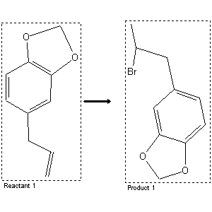

|  |
| FA | RX(1); FLST(1); RX(1) |
Reaction (1 of 1)
| Reaction ID | 132178 |
| Reactant BRN | 136380 |
| Reactant | 5-allyl-benzo[1,3]dioxole |
| Product BRN | 150219 |
| Product | 5-(2-bromo-propyl)-benzo[1,3]dioxole |
| No. of Reaction Details | 1 |
Reaction Details (1 of 1)
| Reaction Classification | Preparation |
| Reagent | water; hydrobromic acid |
| Comment | Handbook |
| Citation Pointer | 512146; Journal; Sakakibara; NPKZAZ; Nippon Kagaku Zasshi; 73; 1952; 235; Chem.Abstr.; 1953; 10511;512147; Journal; Orcutt; Bogert; JACSAT; J.Amer.Chem.Soc.; 58; 1936; 2055;512148; Journal; Lieberman et al.; JACSAT; J.Amer.Chem.Soc.; 69; 1947; 1540; |
Reference (1 of 3)
| Citation Number | 512146 |
| Document Type | Journal |
| Authors | Sakakibara |
| CODEN | NPKZAZ |
| Journal Title | Nippon Kagaku Zasshi |
| Journal/Review Without CODEN | Chem.Abstr. |
| (Series) Volume | 73 |
| Publication Year | 1952; 1953 |
| Page | 235; 10511 |
Reference (2 of 3)
| Citation Number | 512147 |
| Document Type | Journal |
| Authors | Orcutt; Bogert |
| CODEN | JACSAT |
| Journal Title | J.Amer.Chem.Soc. |
| (Series) Volume | 58 |
| Publication Year | 1936 |
| Page | 2055 |
Reference (3 of 3)
| Citation Number | 512148 |
| Document Type | Journal |
| Authors | Lieberman et al. |
| CODEN | JACSAT |
| Journal Title | J.Amer.Chem.Soc. |
| (Series) Volume | 69 |
| Publication Year | 1947 |
| Page | 1540 |